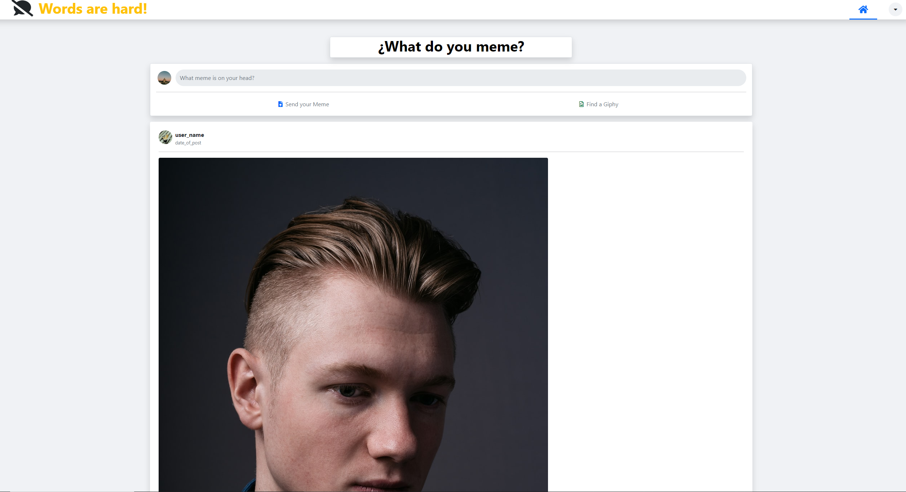

A social app with MEME/GIF posts only

Words are HARD, is a small social feed that offers a quick and fun interaction between users. You can @ to your friends and post to your feed without any words at all! The entire interaction is based in MEMEs and GIFs!
'What Do You MEME?'
Words are hard was a challenging project as the concept for it in our heads was much easier to execute than we initially anticipated. For the overall look and feel we stuck with a more Instagram/Facebook style but originally, we were aiming to go down the path that is Discord chat threads.
Discord's Gif section and the Gif section for Apple's iMessage were my inspiration for the idea and when I brought it to my team, they loved it from the get-go. Something about the simplicity of the conversation as well as the challenge of finding that ONE meme of gif that sends the message you want with just the right amount of sass just made is so much fun.
My primary focus on the project was working with the Giphy API. I at first assumed this would be easy but it proved to be quite daunting. Implementing the API was rather straight forward and happened rather quickly, but I wasn’t ready for the amount of data that Giphy sends back after a request. Your basic data: name, type, link, etc. However, the images return was huge! Every gif sends back about twenty different sizes and shapes of the gif in both static images as well as moving gifs. Once I narrowed down the return, I was looking for I was able to start inserting the response into the appropriate area and work on the styling needs to get everything where it needed to be as well as adding hover effects and play/pause functionality.
With only seven days to complete this project while all maintaining a full 40hr work week at our jobs I think we did a rather good just. The concept is there, the layout and appeal are clean, and the functionality works. It may not be a completed application but given the time constraints the MVP shows what it could possibly become.